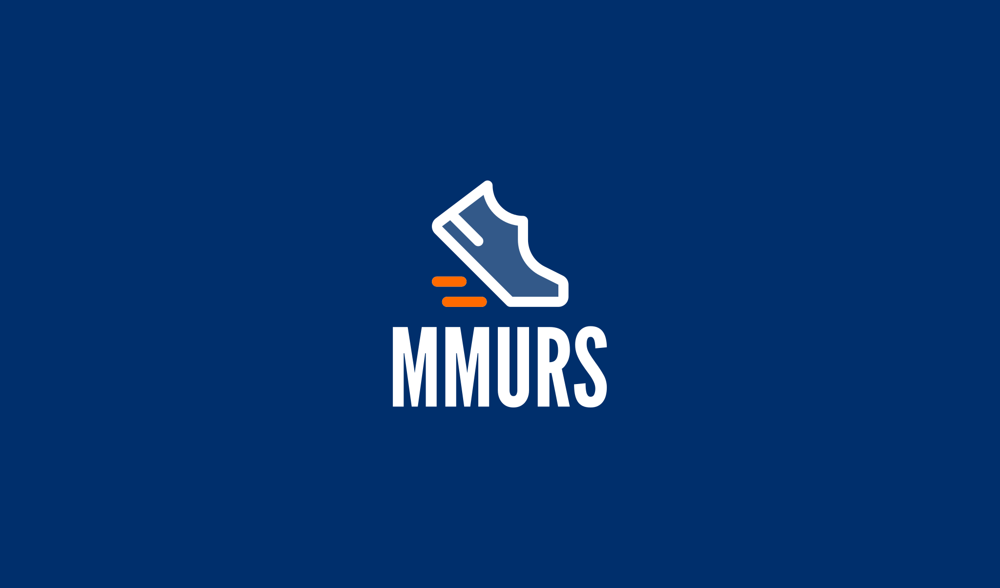
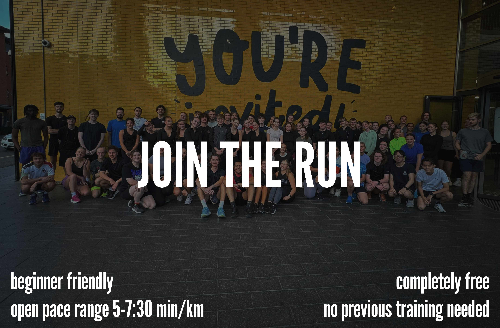
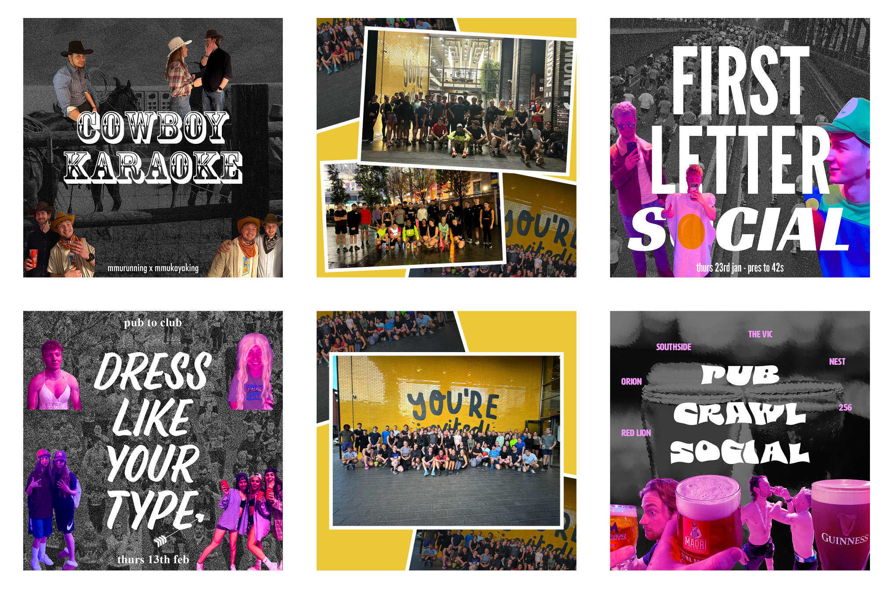

Case Study · January 2024–Present
MMU Running — Brand & Social
I managed and evolved the club’s visual identity, social content, and communications before being elected Chair by 500+ members.

I joined MMU Running in January 2024 as Social Media Manager, managing Instagram and TikTok while producing polished content across multiple platforms.
Alongside social media, I helped strengthen the club’s identity by designing the logo, maintaining visual consistency, and supporting the creation of club merchandise.

01 — Visual Identity
Sporty, recognisable, and easy to apply
The identity uses MMU-inspired blue and orange, paired with direct typography and flexible layouts for posts, merchandise, and club communications.

02 — The Challenge
A large club needed a consistent voice
- Brand — Making visuals feel coherent across platforms
- Content — Creating posts that felt energetic and professional
- Community — Communicating clearly with a large membership
- Merch — Translating the identity into physical items
03 — The Outcome
A stronger brand for a growing community
- Logo — Designed a mark still used by the club today
- Social — Managed Instagram and TikTok content
- Leadership — Elected Chair following a member vote
- Systems — Built reusable visual patterns for club updates